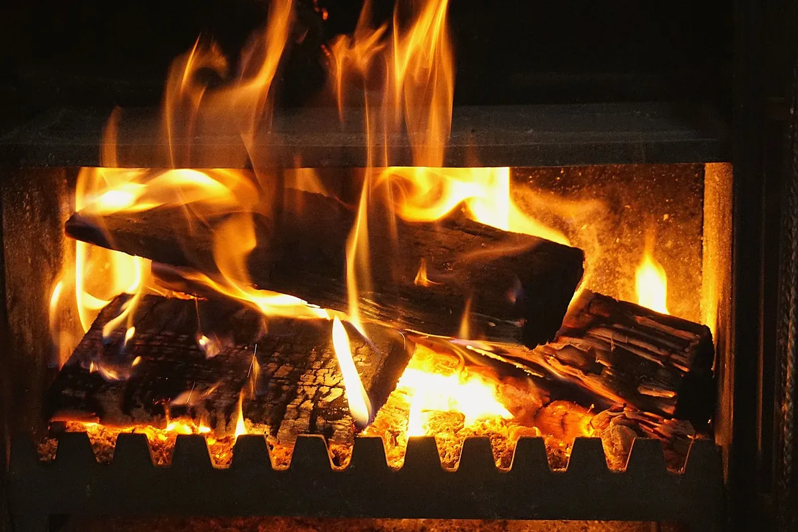

Votre maison est équipée d’une cheminée ? Pour assurer le bon fonctionnement de celle-ci, il est impératif d’avoir un conduit de cheminée adapté et conforme à la réglementation.
En plus d’assurer votre sécurité et celle de votre habitation, le conduit de fumée permet d’optimiser le rendement de votre appareil de chauffage.
Dans cet article, focus sur une technique particulièrement adaptée en rénovation : le tubage des conduits de fumées, également appelé “gainage” !
Pourquoi tuber son conduit de cheminée ou de poêle ?
Comme son nom l’indique, cette opération consiste à installer un tube dans le conduit de votre cheminée ou de votre poêle. Celui-ci est installé depuis la toiture et permet d’obtenir un conduit parfaitement étanche.
Premièrement, concentrons-nous sur la sécurité. Le gainage permet de limiter l’accumulation de bistres. Ces dépôts composés de suie détrempée sont inflammables et constituent en général le premier risque de feu de cheminée.
Toutefois il faut combattre une idée reçue : le tubage du conduit ne remplace pas le ramonage (mais le facilite) ! Vous devez tout de même faire ramoner votre cheminée tous les ans.
Du point de vue performance, un conduit étanche permet d’obtenir un rendement optimal, car le tirage est meilleur.
Cette installation prolonge également la durée de vie de vos appareils, car elle évite la corrosion due à l’acidité des fumées.
Enfin, lors d’un projet de rénovation, les conduits anciens ne sont pas forcément rectilignes ou étanches : l’installation de tubes est donc obligatoire.
Est-il obligatoire de gainer son conduit ?
Depuis 2012, le tubage du conduit de cheminée est obligatoire dans toutes les maisons neuves.
Pour le reste des constructions, l’obligation concerne les équipements suivants :
- Les cheminées à foyers fermés,
- Les poêles (bois, granulés…),
- Les inserts.
Pour les foyers ouverts, la réglementation est plus souple et n’oblige aucun gainage. Il est toutefois conseillé de faire tuber son conduit pour les raisons évoquées ci-avant.
De plus, si le diamètre du conduit est trop gros, le tubage permet de le réduire pour améliorer le tirage.

Qui appeler pour tuber un conduit ?
Les entreprises du bâtiment compétentes pour ce type d’installation se font assez rares. En effet, tous les maçons, couvreurs ou chauffagistes ne sont pas spécialisés en fumisterie.
Il est important de faire appel à une entreprise compétente, qui est en pleine connaissance de toutes les normes relatives au gainage. Notamment, la réglementation la plus importante est donnée par le NF DTU 24.1, qui régit la construction et la rénovation des conduits d’évacuation des fumées.
Il est encore plus important, en plus d’être obligatoire, de choisir une entreprise avec une assurance décennale ! En cas d’incendie, c’est celle-ci qui sera appelée pour réparer les dommages.
Enfin, avant d’installer le tubage, votre conduit devra être ramoné pour être complètement propre.
Vous l’aurez compris, il est difficile de trouver le bon professionnel pour le gainage de votre conduit. Pour faciliter votre recherche, Plateo regroupe des artisans de confiance et compétents pour ce type de projet !
Si votre maison se situe en région PACA, que ce soit de Marseille jusqu’à Arles, vous pouvez demander un devis pour le tubage de votre cheminée directement sur notre site internet.